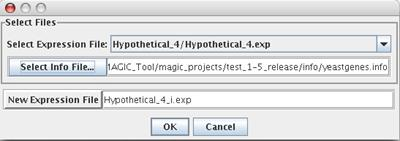

(9) Add gene info to expression file

Now is the best time to add gene annotations to your expression file, so the annotations will be visible when you explore your data. Under the Expression menu, choose "Import Gene Info..." Select the expression file to which you wish to add annotations, and select the file containing the annotations. A file containing such annotations for yeast is included in the sample files. A similar file can be formed for any organism by creating a tab delimited text file with the appropriate columns (alias, chromosome, location on chromosome, biological process, molecular function, and cellular component).